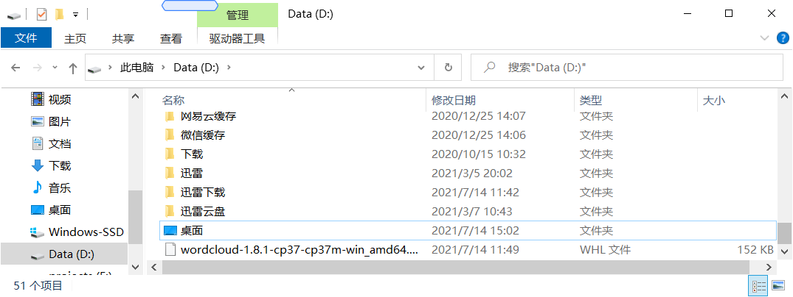
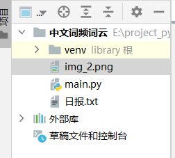
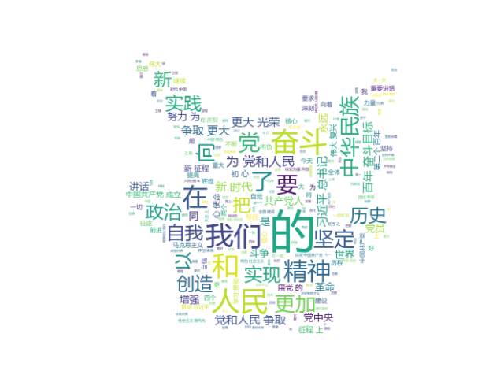

首先是安装教程：
https://pypi.org/
点击这个链接分别下载自己对应版本的wordcloud和jieba的包
wordcloud:下载成功以后应该是一个 .whl 文件，需要命令行进行操作安装：
为了操作简便，可以把.whl 文件拖到d盘根目录下

在路径直接输入cmd，进入命令窗口，输入pip install 文件名字（这里输入你刚才的.whl文件全名）另外不少人会有pip更新版本有误的现象：NO MODULE NAME
解决方法：
在命令行首先执行
python -m ensurepip
然后执行
python -m pip install --upgrade pip
jieba:
把你下载好的压缩包打开把jieba 这一文件夹放置在python安装目录下的site-packages文件夹下就可以了：
<img src = “../../images/云图_site-packages.png” width = “100%>
然后是代码环节了,依然是废话不多说,直接上代码：
import imageio
import jieba
import matplotlib.pyplot as plt
import numpy as np
from PIL import Image
from wordcloud import WordCloud
file_path = '日报.txt'
background_image = np.array(Image.open('img_2.png'))
with open(file_path, 'r', encoding='utf-8') as f: # 读取文件
essay = f.read()
wordlist = jieba.cut(essay, cut_all=False) # 分割
jieba_essay = " ".join(wordlist) # 以空格拼接起来
# 生成词云
wordcloud = WordCloud(font_path=r'C:\Windows\Fonts\msyh.ttc', # 调用系统字体,微软雅黑
background_color='white', # 背景色
max_words=500, # 最大词数
max_font_size=60, # 频率最大字体大小
mask=background_image # 自定义显示的效果图
).generate(jieba_essay)
plt.axis('off')
plt.figure()
plt.imshow(wordcloud, interpolation='bilinear')
plt.axis("off")
plt.show()
文件结构长这样子:

最后的预览效果大概就长这样子啦：
